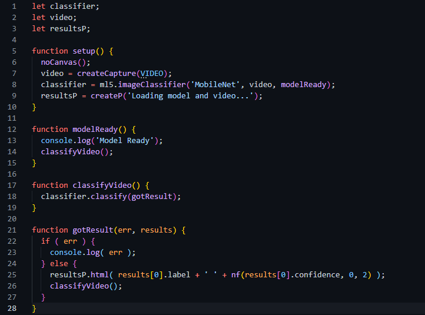

ml5 - библиотека JavaScript, объединяющая в себе TensorFlow.js и TFVis.js. Имеет достоинства этих обоих библиотек. Лаконичный синтаксис, понятный даже новичкам. Заранее заготовленные датасеты, и крайне простое использование датасетов, созданных другими разработчиками.
Естественно, узнав о всем вышеперечисленном, я захотел создать что-нибудь с использованием этой библиотеки.
Библиотеку не нужно скачивать на компьютер. достаточно лишь указать в src тега script эту ссылку - https://unpkg.com/ml5@latest/dist/ml5.min.js. И готово, можно начинать работу.
В этот раз я посчитал, что интереснее всего будет создать нейронную сеть, которая будет определяет почти любой объект, который находится в поле зрения вебкамеры с помощью Object Detector - одного из многочисленных инструментов ml5.js.
Результат в конце страницы
Вот весь код:
Это просто поразительно, что всего 28 строк кода дают такой результат. Код мало того, что очень короткий, он еще понятен новичку в js.
В самом начале задаются переменные - classifier, video, resultsP, которые сначала ничего не значат.
В самом начале этой функции вызывается другая функция, встроенная в ml5 - noCanvas(). Эта функция позволяет выводить результат работы нейронной сети без тега <canvas>. Задается значение для video - встроенная в ml5, фунция createCapture(VIDEO), которая получает доступ к вебкамере и выводит изображение с нее на сайт. classifier - подключается к методу ml5 imageClassifier. Далее подключается датасет - MobileNet, содержащий гигантское количество изображений самых разных вещей. Далее задается, откуда нейросеть должна брать входные данные - из переменной video, после чего вызывается функия modelReady. resultsP - создает тег <p> в котором прописано следующее - 'Loading model and video'. Эта надпись будет отображаться до того момента, пока не будет готова модель и вебкамера
запускается после выполнения функции setup(). В начале функции в консоль выводится сообщение - 'Model Ready'. Потом вызывается функцию - classifyVideo().
Переменная classifier обращаеться к, встроенному в ml5, методу classify(), которая позволяет нейросети классифицировать, то что находится в поле зрения вебкамеры.
В начале функции находится конструкция if else. Если случается какая либо ошибка, то в консоль будет выводится информация о ней, иначе, если ошибка не происходит, то в переменную resultsP выводится первое значение из массива, содержащего все результаты работы нейронной сети. Вызывается фунция classifyVideo(). Программа зацикливается, что позволяет нейросети непрерывно определять, что она видит.